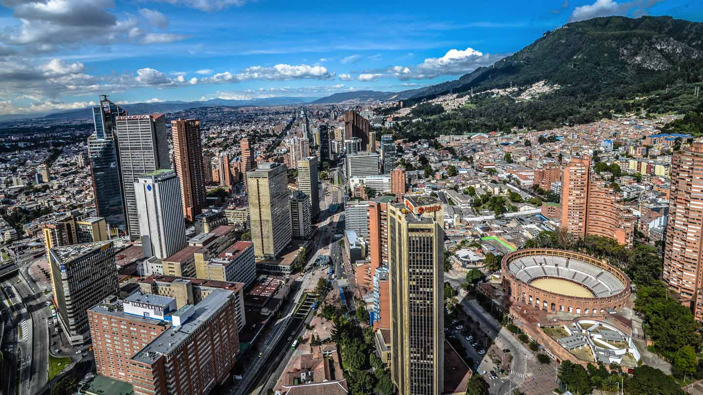
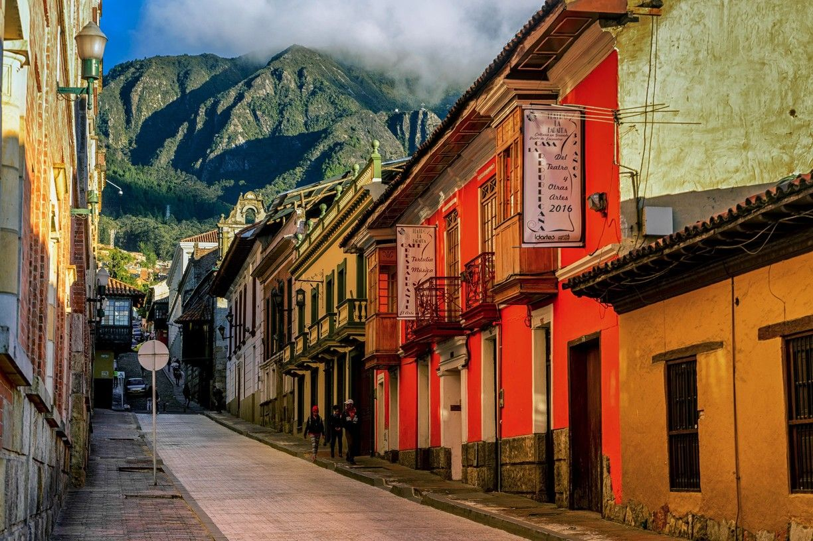

<!-- Your main view, should have "view-main" class -->
<div class="view view-main">
  <!-- Initial Page, "data-name" contains page name -->
  <div data-name="home" class="page">
  <!-- Top Navbar -->
      <div class="navbar">
          <div class="navbar-bg"></div>
          <div class="navbar-inner barra-supmafec">
              <div class="left">
                  <a href="" class="panel-open"> <i class="fas fa-bars"></i>
                  </a>
              </div>
              <div class="title">Tours</div>
          </div>
      </div>

      <!-- Bottom Toolbar -->
      <div class="toolbar toolbar-bottom">
          <div class="toolbar-inner barra-down">
              <!-- Toolbar links -->
              <a href="#" class="bo">
                  </a>
              <a href="/home/" class="home"><i class="fas fa-home icono"></i></a>
              <a href="/mapa/" class="mapa"><i class="fas fa-map-marked-alt icono"></i></a>
          </div>
      </div>

      <!-- Scrollable page content -->
      <div class="page-content">
        <div class="tourtitulo">
        <p> Los mejores Tours que puedes hacer en Bogotá</p>
        </div>
          <div class="tourinfo">
            <p> </p>
            <div class = "my-rating"> </div>
            <h3>Plaza de toros de Santamaría</h3>
            <p>Se encuentra ubicada en el sector de San Diego, en la zona oriental del Centro Internacional. Cuenta con una capacidad de 14.500 espectadores, fue construida en 1931. Fue propuesta como Monumento Nacional de Colombia a través de la resolución 3 del 12 de marzo de 1982 y declarada como tal por el decreto 2390 del 26 de septiembre de 1984.</p>
          </div>
          <div class="tourinfo">
            <p> </p>
            <h3>Plaza de Bolivar</h3>
            <p>La plaza de Bolívar es la plaza principal de la ciudad de Bogotá y de Colombia. Está ubicada en el centro de la ciudad, entre las carreras Séptima y Octava con calles Décima y Once. A su alrededor se encuentran algunos de los principales edificios de la ciudad: al norte el Palacio de Justicia,  al sur el Capitolio Nacional.</p>
          </div>
          <div class="tourinfo">
            <p> </p>
            <h3>La Candelaria</h3>
            <p>La Candelaria es la localidad número 17 del Distrito Capital de Bogotá, Capital de Colombia. Se encuentra en el centro oriente de la ciudad de Bogotá. Abarca el centro histórico de Bogotá. Allí se fundó la ciudad el 6 de agosto de 1538 y se construyó la primera iglesia. Alberga la Plaza de Bolívar, que tiene en su costado oriental la Catedral Basílica.</p>
          </div>
          <div class="tourinfo"> 
            <p> </p>
            <h3>Chorro de Quevedo</h3>
            <p>La plazoleta del Chorro de Quevedo es un lugar público de Bogotá. En este lugar estableció su guarnición militar Gonzalo Jiménez de Quesada, antes de fundar la ciudad en este mismo lugar en 1538. Está ubicada en la calle 13 con carrera 2, en pleno centro histórico de la ciudad. Se encuentra enmarcada por construcciones coloniales del siglo XX.</p>
          </div>
          </div>
        

        <!-- Link to another page -->
        <a href="index.html">About app</a>
        <script src="http://ajax.googleapis.com/ajax/libs/jquery/2.0.0/jquery.min.js"></script>
        <script src="jquery.star-rating-svg.js"></script>
      </div>
    </div>
  </div>